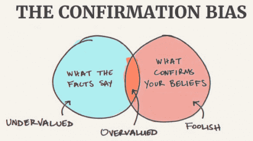
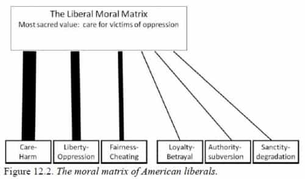

Rod Berne is a student, writer, and thought criminal. His columns run every Saturday. Follow him on Twitter.


As the 2016 election moves forward, we are witnessing politics become increasingly polarized. On the Democrat side, Hillary Clinton continues struggling to solidify her status as the presumptive Democratic nominee against aging Marxist Bernie Sanders. On the Republican side, Donald Trump has effectively cemented his place as the nominee, though the GOP establishment shows signs of wariness at his unexpected meteoric rise.
In The Righteous Mind: Why Good People Are Divided By Politics And Religion, psychologist Jonathan Haidt writes about why it is that people’s arguments about politics get so heated, and why people very rarely change their minds even when presented with clear evidence. We have all had political conversations with people and wondered why they are unable to just accept that we are right and they are wrong. We may dismiss them as naïve or stupid, but there may be something else going on.

The book opens with a couple of interesting hypothetical scenarios:
“A family’s dog was killed by a car in front of their house. They had heard that dog meat was delicious, so they cut up the dog’s body and cooked it and ate it for dinner. Nobody saw them do this.”
“A man goes to the supermarket once a week and buys a chicken. But before cooking the chicken, he has sexual intercourse with it. Then he cooks it and eats it.”
In both of these cases, no one was harmed. Yet when Haidt presented these scenarios to people, they almost universally agreed that the individuals in both scenarios had done something wrong. When pressed to give a reason exactly why they were wrong, many people were unable to offer a clear answer. After doing research around the world, from universities to poor towns in Brazil, Haidt noticed that people often give gut responses to difficult moral questions, and when asked why, they provide a mishmash of responses that oftentimes they admit do not make sense.
This led Haidt to form his famous social intuitionist model of moral psychology: Intuitions come first, strategic reasoning second. For instance, many college students would readily agree that as long as no one is hurt and there is no victim, people should be able to do what they want. Yet when Haidt pressed them to say who the victim is in the chicken scenario, they flounder about, unable to give an answer. This moral dumbfounding seems to suggest that people come up with an answer first, and then use reasoning to support their emotional gut reactions. Most moral reasoning is often simply a post-hoc justification for our intuitions.
Haidt also found that in non-Western cultures like India and Brazil, they have a “thicker” moral world. In non-individualistic societies, cultures broaden the moral domain to encompass and regulate more aspects of life. From what a person wears, how they eat, and who they have sex with, most cultures across the globe have much stricter moral codes than the relaxed ones familiar to Westerners, which center around harm and fairness.
Interestingly, his experiments found that the effect of social class is far larger than the effect of culture. Upper-middle class Brazilians, Indians, and Americans often reluctantly agreed that in hypothetical moral scenarios with no victim, even if they don’t agree with it or feel disgusted by it, there was nothing wrong with what had occurred. Yet for lower-class people across cultures, including poor people in the U.S., they were far less likely to endorse any disgusting act, even if it is completely victimless.
To expand on the social intuitionist model, the book gives a metaphor of the mind divided into two parts: The rider and the elephant. The elephant is your mind’s emotions, which are rapidly activated when making a political or moral judgment. The rider serves the elephant—whatever way the elephant leans, the rider assists with explaining why the elephant makes that decision. Think of the rider as a lawyer, backwards-rationalizing the elephant’s actions.
Another way to think about this is that your reasoning is like a press secretary, who automatically justifies any position taken by the president, your emotions. It is a mistake to think of moral reasoning as something people do by themselves to figure out a truth.
The book states that while we may think of reasoning as central to morality, it in fact plays a secondary role to emotions. For example, psychopaths are able to reason yet lack emotion. Babies, on the other hand, are unable to reason yet have strong emotions. Psychopaths are famously morally deficient. Yet when babies are presented with simple moral scenarios, they show signs of morality.
The book also offers an interesting way to look at how people come to conclusions when presented with evidence: Can versus must. When we are presented with evidence that we want to believe, we ask ourselves the question: Can I believe it? Often we’ll find that the answer is yes.
Conversely, when we are shown evidence that goes against what we would prefer to believe, we ask ourselves the question: Must I believe it? Often we’ll find that the answer is no.

The book lays out the six foundations of morality that each individual holds to varying degrees. The six moral foundations are:
1. Care and harm. It makes us sensitive to signs of suffering and need.
2. Fairness and cheating. We vigilantly look for signs of cheating, in part because fairness helps us form cohesive communities.
3. Liberty and oppression. Centers around people’s desire to be free from external constraints.
4. Authority and subversion. It allows us to forge a social hierarchy and build relationships.
5. Sanctity and degradation. We have inherited sensitive disgust receptors to identify signs of impurity. It makes it possible for people to invest objects with irrational and extreme values.
6. Loyalty and betrayal. It makes us sensitive to signs that another person is not a team player, and want to punish those who betray our tribe.
As you might imagine, liberals tend to view the first three moral foundations as supremely important, while neglecting the other three. On the other hand, conservatives value all six foundations roughly equally. This is a major source of disagreement between both tribes. Liberals tend to think that if no one is being harmed, an action is fine. They also think that if a person is being harmed, that is the worst possible thing. For conservatives with a wider variance of morality, they are also sensitive to loyalty to one’s country, and the sanctity of certain institutions.
One reason why liberals are so unable to understand conservatives is because of this very point: There is more to morality than harm and fairness. It’s not just Western conservatives who value loyalty, authority, and sanctity. If you travel to any country outside of the West, you will find cultures value place enormous importance on those three foundations. The idea of harm and fairness being the only center of morality would be completely alien to most cultures.
The third principle of moral psychology is that morality binds and blinds. Humans are social animals, and we need common moral standards to rally around to increase trust in one another. Communities form in part by establishing moral standards. If a person violates the tribe morality, they are punished.
Once people join a political team, they get ensnared in its moral matrix. They see confirmation of their viewpoints everywhere and it is often impossible to convince them that they are wrong. We saw this during the mainstream media coverage of the meetup outrage back in February.
Think about one common moral code on college campuses today: feminism. If a college student were to violate the shared moral matrix by saying aloud that feminism is a false idol, he would be banished from the tribe, perhaps literally removed from campus if enough students rally together and shout loud enough. In the past, Galileo questioned the moral matrix of his day, the Catholic Church, by saying that the earth revolves around the sun. Thus, he was punished.
Today, if a college student says that women would be better off as wives rather than careerists, he would be punished. Punishing such heretics allows the moral tribe to reaffirm their faith in their moral matrix and feel better about ridding themselves of a violator of the moral code, never thinking whether the code is true or false. Morality binds and blinds.
My only complaint with the book is that it does not delve deep enough into status signaling and its role in morality. He touches on it briefly when describing how moral tribes form, but I would like to have seen him explore it further.
The Righteous Mind is a fascinating book filled with interesting information about how morality evolved and its relationship with politics. It also teaches you how to speak with someone from the opposite end of the political spectrum and find common ground. It offers some useful tools to think about liberal and conservative morality, and how some cultures have a “thicker” moral matrix with many moral codes, and how others have a “thinner” moral matrix with few codes outside of harm and fairness.
It will broaden the way you think about politics, reasoning, and people. Highly recommended.
Read More: The Real Nature Of Politics